Electricitat industrial. Contactors#
Pàgina en desenvolupament
Encara estem treballant en aquest document.
Esperem oferir-vos properament el seu contingut.
Disculpeu les molèsties.
Si pensem en una instal·lació industrial, la seguretat dels sistemes és fonamental. Es treballa amb intensitats i potències importants, amb comandaments i dispositius de vegades exposats a un entorn hostil. Aquests dispositius han de complir normatives molt exigents, la vida dels treballadors en depèn.
Els circuits s’acostumen a representar en dos circuits separats: circuit de potència i circuit de control. Alguns dispositius, com és el cas del contactor, tenen connexions als dos circuits; s’identifica que pertanyen al mateix dispositiu ja que comparteixen nom.
Dispositius de comandament i senyalització#
Polsadors, llums pilot, brunzidors són dispositius als que estem acostumats i que ens permeten la interacció amb el sistema. En aquest camp necessitem dispositius robustos i fiables, fàcils d’integrar en un panel de comandament i amb formes i un codi de colors intuitius.
Per exemple: un seccionador és un interruptor que pot obrir i tancar el circuit amb càrrega. Quan parlem de 32 A AC no és trivial fer aquesta operació amb seguretat. El seccionador està dissenyat específicament per a això.
Dispositiu |
Imatge |
Símbol |
|---|---|---|
Llum pilot |
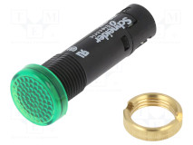 |
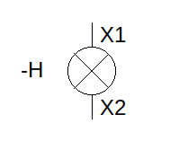 |
Polsador d’engegada |
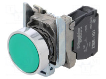 |
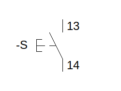 |
Polsador d’aturada |
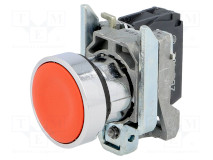 |
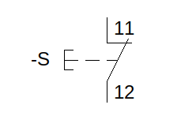 |
Polsador d’emergència |
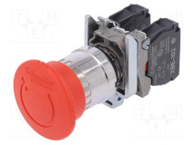 |
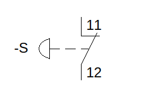 |
Seccionador |
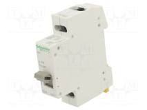 |
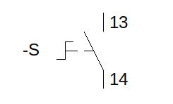 |
Brunzidor |
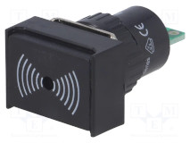 |
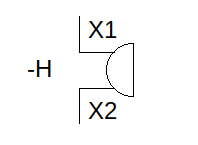 |
Dispositius de protecció#
A banda dels fusibles, que es poden combinar amb sèrie amb un seccionador en un sol dispositiu, tenimaltres elements de protecció molt utilitzats:
Relé tèrmic. Amb l’ajut d’un bimetall un seccionador desconnecta el circuit quan es detecta una sobrecàrrega per l’increment de temperatura produit pel corrent que hi circula.
Magnetotèrmics, disjuntors o interruptors automàtics. A la protecció contra sobrecàrregues del relé tèrmic s’afegeix la protecció contra curtcircuits gràcies a un electroimant alimentat pel corrent que hi circula. Quan el corrent és escessiu (típicament 3 vegades la intensitat nominal) l’electroimant desconnecta el circuit, amb una resposta del ordre de ms.
Interruptor diferencial. Protegeixen a les persones de contactes directes i indirectes. Són molt sensibles (al voltant de 30mA), i mesuren la diferència d’intensitats entre les línies del circuit. Bàsicament un electroimant està alimentat pel secundari d’un transformador. Com a primari actuen les diferents línies: si la suma d’intensitats no és zero l’electroimant dispara el dispositiu. Cal comprovar periòdicament el funcionament d’aquest dispositiu, ja que protegeix a les persones. Per això porta un polsador que genera una petita diferència d’intensitats i permet comprovar-ne el correcte funcionament.
Dispositiu |
Imatge |
Símbol |
|---|---|---|
Seccionador portafusible |
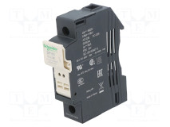 |
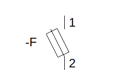 |
Relé tèrmic |
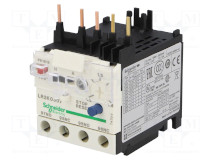 |
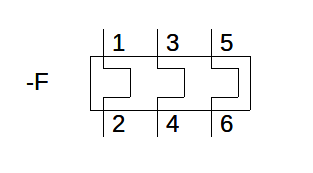 |
Magnetotèrmic |
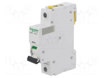 |
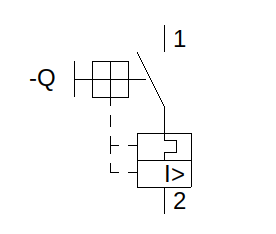 |
Interruptor diferencial |
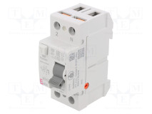 |
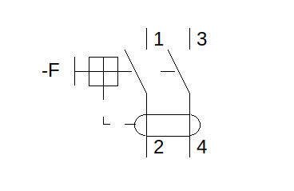 |
Dispositius de maniobra. Contactors.#
Aquests dispositius implementen la lògica cableada del circuit.
Contactors. La norma IEC 60947-1 defineix el contactor com un dispositiu de commutació mecànic que només té una posició de repòs, que funciona d’una altra manera que no sigui manualment, capaç de produir, transportar i tallar corrents en condicions normals de circuit, incloses les condicions de sobrecàrrega de funcionament. En el fons, un contactor és un relé que compleix totes les normes necessàries perfer la seva funció en els circuits de control.
Podem incorporar equipament addicional als contactors per ampliar el nombre de contactes o retardar la seva activació o desactivació. Típicament aquest equipament adicional s’incorpora a sobre del propi contactor amb una unió mecànica pròpia del fabricant.
Dispositiu |
Imatge |
Símbol (potència) |
Símbol (bobina a control) |
Símbol (contactes auxiliars a control) |
|---|---|---|---|---|
Contactor |
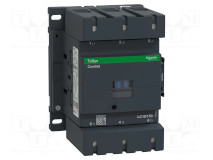 |
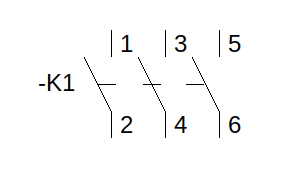 |
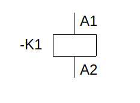 |
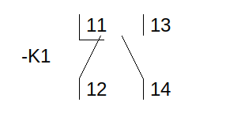 |
Contactor amb temporització a la connexió |
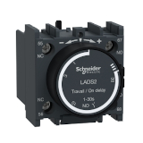 |
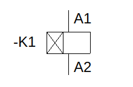 |
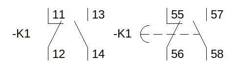 |
|
Contactor amb temporització a la desconnexió |
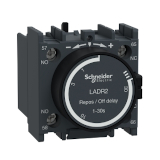 |
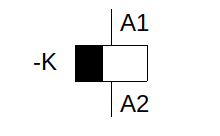 |
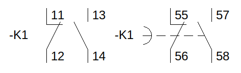 |
Engegada motor trifàsic#
A l’esquerra el circuit de potència, a la dreta el circuit de control:
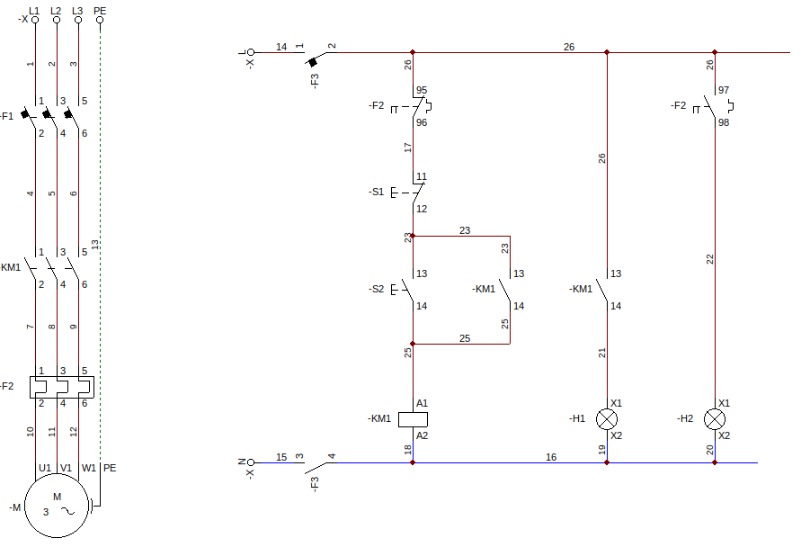
Donem tensió als circuits:
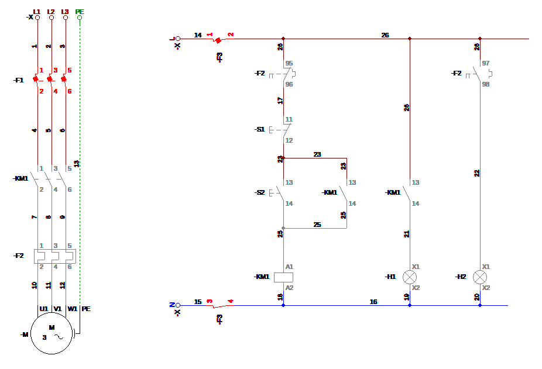
Premem S2 i el motor engega:
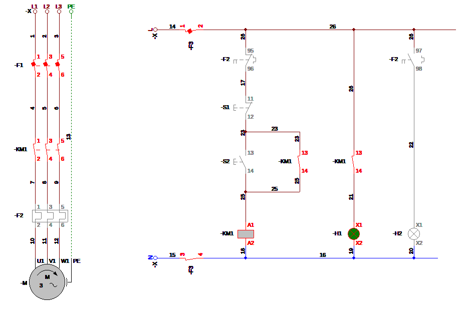
Premem S1 i el motor s’atura:
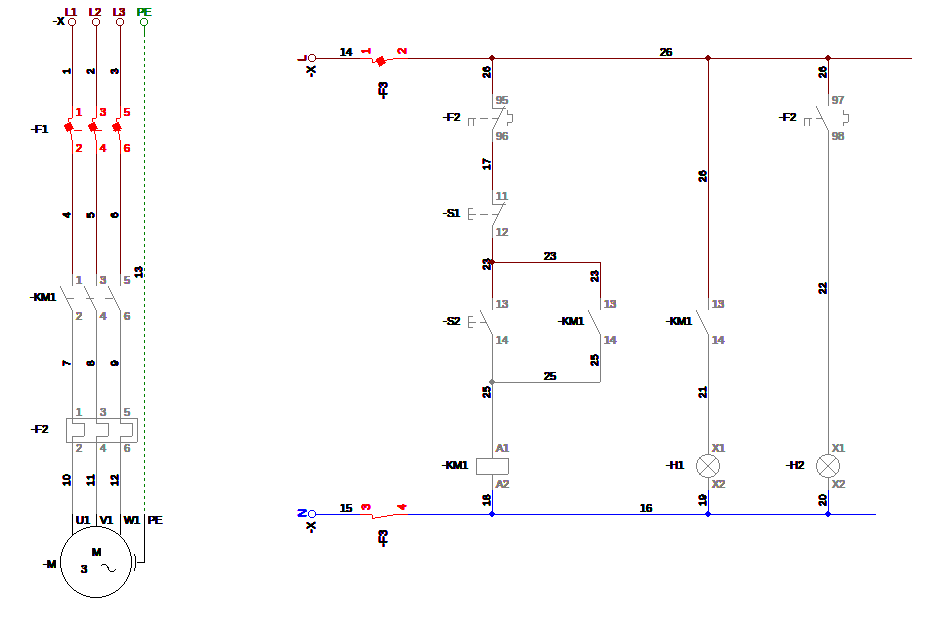
Inversió de gir del motor trifàsic#
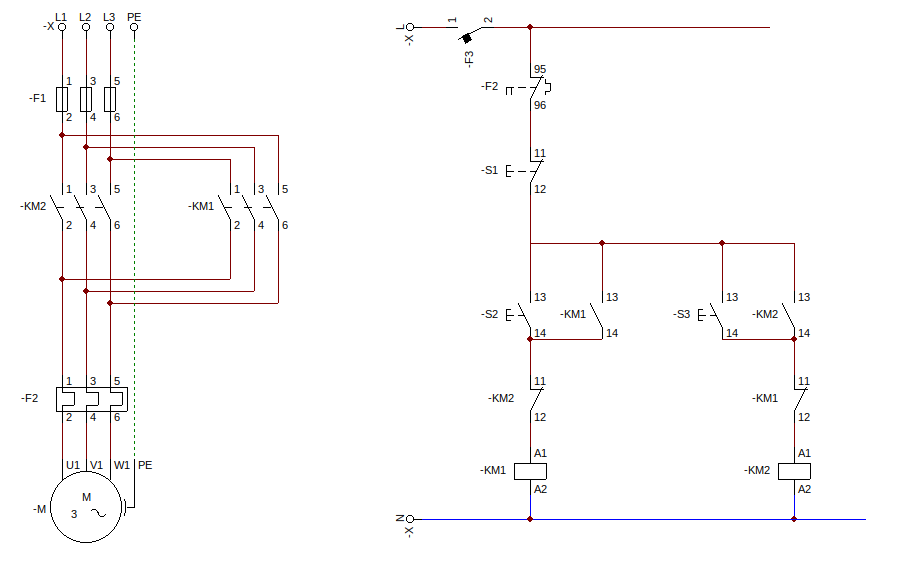
Premem S2 i el motor engega en sentit anti-horari:
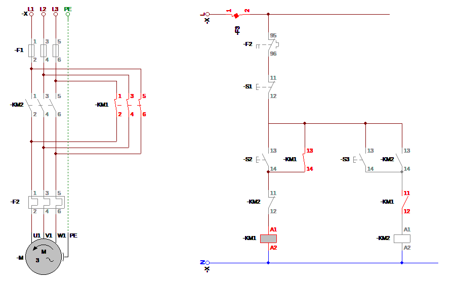
Si premem S3 no passa res, els contactes 11 i 12 de KM1 no permeten activar KM2. Primer hem d’aturar el motor amb S1:
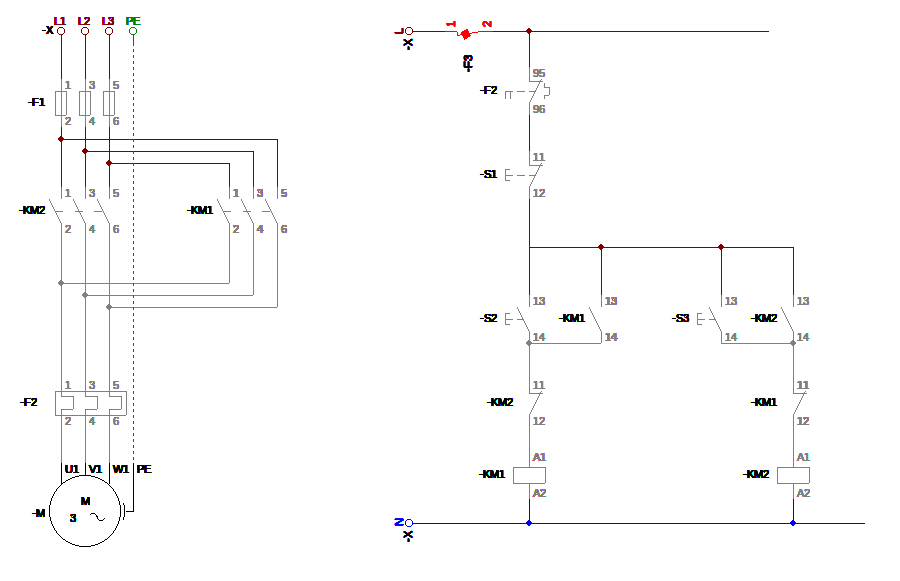
Premem S3 i el motor engega en sentit horari:
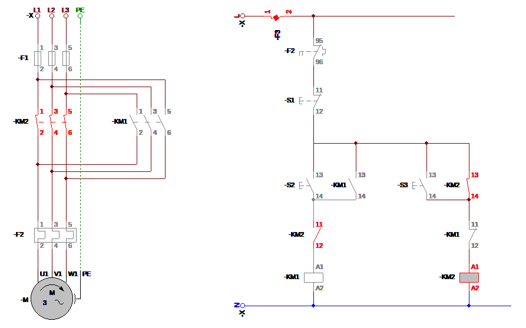
Engegada estrella - triangle del motor trifàsic#
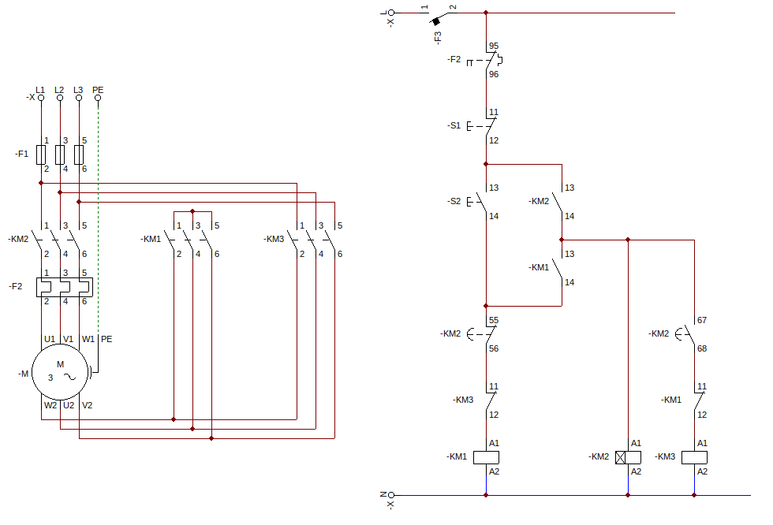
Premem S2 i el motor engega en estrella:
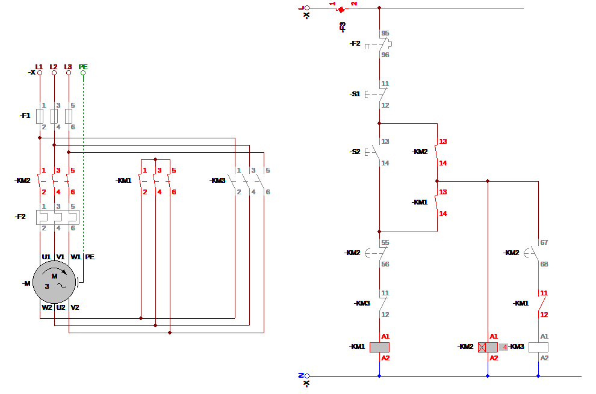
Després del temps programat els contactes 55 i 56 de KM2 s’obren i els contactes 67 i 68 es tanquen, el motro passa a connexió en triangle:
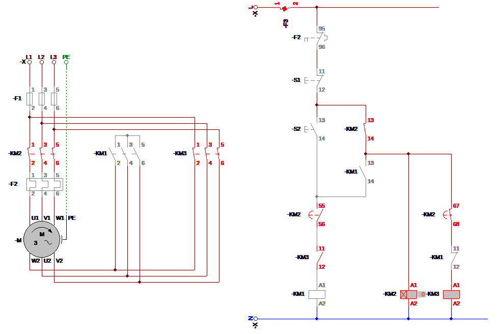